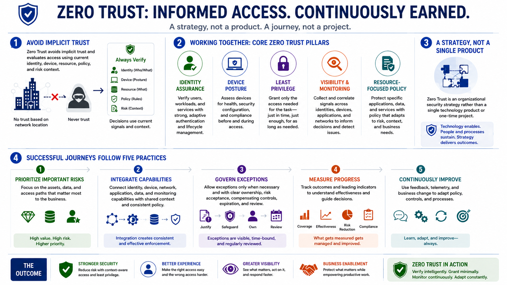

What Is Zero Trust?
Course Summary
Connecting to LMS... Progress: in progress
Version 1.0 | Date: 2026-06-16 | Educational overview of Zero Trust concepts.

Narration
Zero Trust avoids implicit trust and evaluates access using current identity, device, resource, policy, and risk context.
Identity assurance, device posture, least privilege, visibility, monitoring, and resource-focused policy work together.
Zero Trust is an organizational security strategy rather than a single technology product or one-time project.
Successful journeys prioritize important risks, integrate capabilities, govern exceptions, measure progress, and continuously improve.